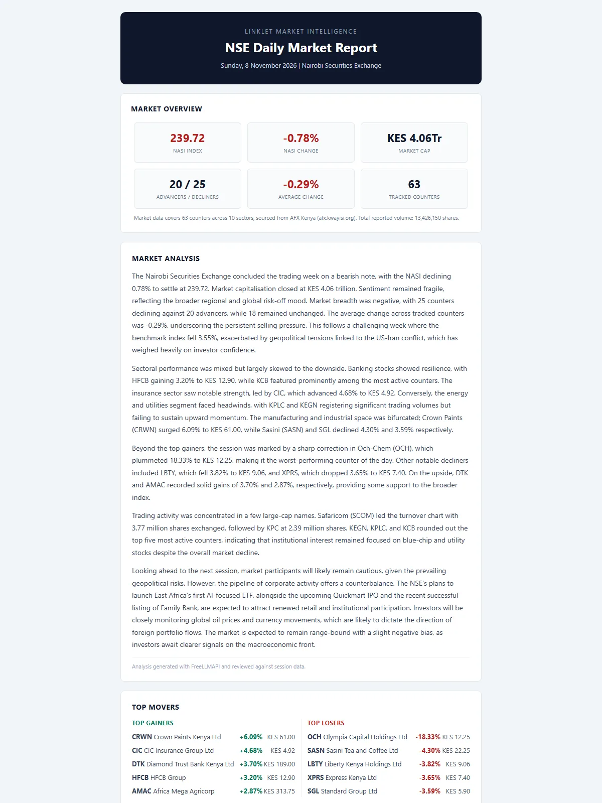
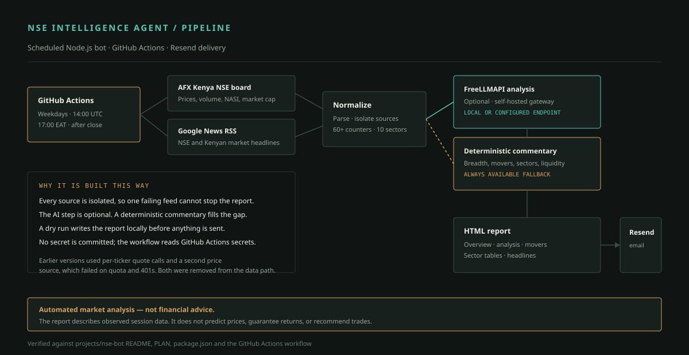

Automation and market reportingScheduled
NSE Intelligence Agent
A weekday NSE market report pipeline: one full-board price fetch, isolated news and analysis sources, a deterministic fallback when no model is available, and email delivery through Resend.

The constraint
A daily market report that failed in every quiet way.
The first version looked finished until it ran. Prices came back as zero because the free data key could not cover the NSE board. Headlines were empty because the news feeds had moved or closed. The AI section said “analysis unavailable” because it pointed at a hosted endpoint that did not exist. A single source failure could take down the whole run.
The constraint was not “add more data.” It was to produce a complete, readable report every weekday after market close, even when one source failed, and to be honest about where the numbers came from. The report also had to be useful without an LLM. A model could improve the commentary, but it could not be a dependency.
The system
One board fetch, isolated sources, a report that always builds.
The bot is a Node.js program scheduled by GitHub Actions on weekdays at 17:00 EAT. It fetches the AFX Kenya NSE board once per run and parses every listed counter, including price, daily change, previous close, volume, NASI level, and market cap. Headlines come from Google News RSS. Each source is isolated, so a failure in one becomes a visible gap instead of a crashed run.
The analysis layer is optional by design. When a self-hosted FreeLLMAPI gateway is configured, it can generate the commentary. When it is not, a deterministic data-driven fallback covers breadth, movers, sectors, and liquidity. The report never contains an “AI unavailable” placeholder. Delivery is through Resend; if email fails, the HTML report is saved locally and the run exits non-zero so the failure is visible.

What it does
The report, end to end
- Full-board prices. Typically 60+ counters across 10 sectors, with price, daily change, previous close, and volume.
- Market overview. NASI level and change, market capitalisation, advancers and decliners, average change, and tracked counters.
- Headlines. NSE and Kenyan market coverage from Google News RSS.
- Analysis with a fallback. Optional FreeLLMAPI commentary, or deterministic breadth, movers, sector, and liquidity commentary.
- Movers and activity. Top gainers, top losers, and the most active counters.
- Sector tables. Symbol, company, price, change, previous close, and volume for each sector.
- Email-safe HTML. A clean financial document with no emojis or icon characters.
- Dry-run preview.
npm run dry-runwrites an HTML file for inspection without sending email.
Decisions that mattered
Resilience is the feature
- One request instead of one per ticker
- Fetching a quote per counter exhausted the free API quota almost immediately. The AFX Kenya board provides the full list in one request. That change removed the quota failure mode and made the run cheaper and faster.
- Every source is isolated
- Prices, headlines, analysis, and delivery each have their own failure path. A dead RSS feed does not remove the price tables. A missing model key does not remove the report. The run reports what happened rather than collapsing into a generic error.
- A deterministic fallback, not a placeholder
- The fallback commentary is generated from the session data: breadth, the largest movers, sector direction, and liquidity. It is less fluid than a model, and it is always available. The report is complete without a provider account.
- Email HTML is its own target
- Email clients are not browsers. The template uses tables, inline-safe styling, and no external icons. The output is designed for an executive reader, not for a screenshot.
- Secrets live in the runner
- The workflow reads Resend and optional model credentials from GitHub Actions secrets. The repository contains only placeholders. A failed send saves the report locally and exits non-zero.
What I built
The pipeline, the fallback, and the report
I rebuilt the bot around the failure modes I could see: a single board fetch, source-level isolation, a deterministic analysis path, an email-safe template, a dry-run mode, and a workflow that does not depend on a local machine. I also removed the incorrect data paths rather than leaving them as decorative fallbacks.
The result is a small system with a clear contract: every weekday, produce a report. If a source is down, say so in the report. If email fails, keep the file and fail loudly. The report is generated with data from AFX Kenya and Google News RSS, and the optional commentary uses a self-hosted FreeLLMAPI gateway.
Evidence
A generated report
Not financial advice. This is an automated market report. It is a data and engineering project, not an investment recommendation or a trading system.
Status
Scheduled, with a verified dry run
Scheduled
The GitHub Actions workflow is configured for weekdays at 17:00 EAT after market close. A dry run produced 63 counters across 10 sectors, 10 headlines, data-driven analysis, zero emoji characters, and no “unavailable” placeholders. A live send was accepted by Resend.
What this case file does not claim: investment performance, subscriber numbers, or uninterrupted daily delivery. The workflow depends on the AFX Kenya page structure and Google News RSS; both can change.
Next
Make the silence visible
The next work is operational: add a run heartbeat and an alert when a scheduled report does not arrive, test the parsers against saved fixtures, and keep the data-source assumptions in one place. The report itself is complete enough. The remaining risk is the day a source changes and nobody notices.